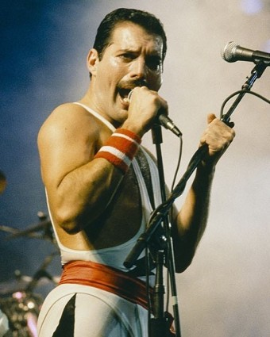

프레디 머큐리

프레디 머큐리(영어: Freddie Mercury, 본명은 파로크 불싸라 또는 프레드릭 불싸라(구자라트어: ફરોખ બલ્સારા, fredrickbulsara), 1946년 9월 5일 ~ 1991년 11월 24일)는 잔지바르에서 태어난 영국의 음악가이자 음악 프로듀서이다. 퀸의 리드 보컬로서 4옥타브를 넘나드는 화려한 보컬이 압권이며 특유의 무대 장악력과 퍼포먼스로 록 역사상 최고의 보컬워크(Vocal Work)를 남긴 아티스트 중 한 명으로 손꼽힌다.